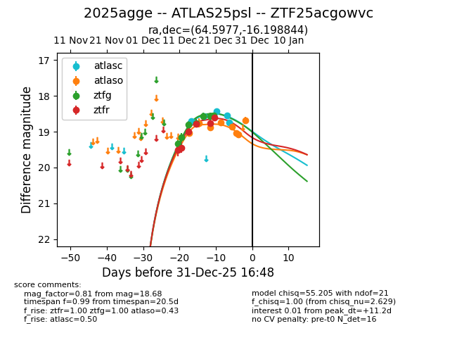
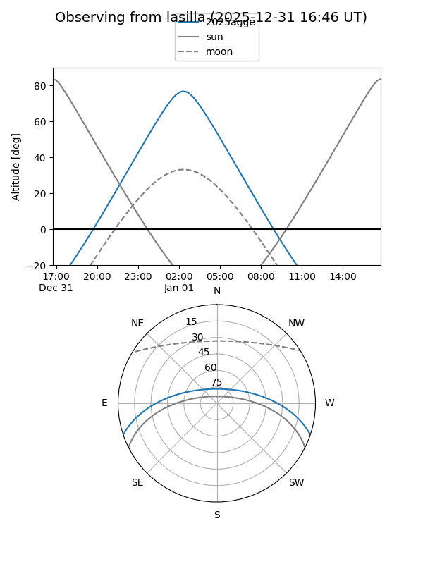
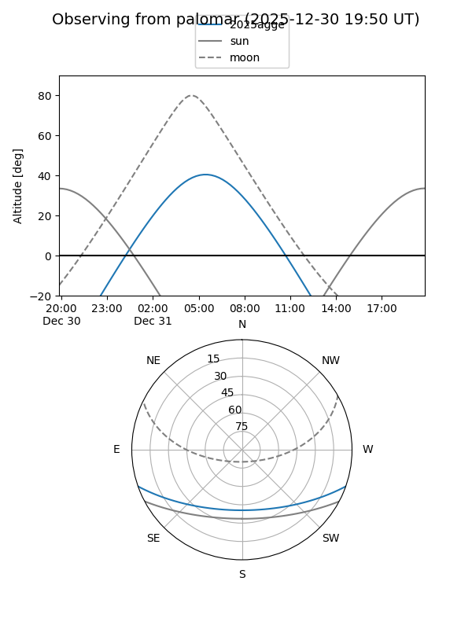
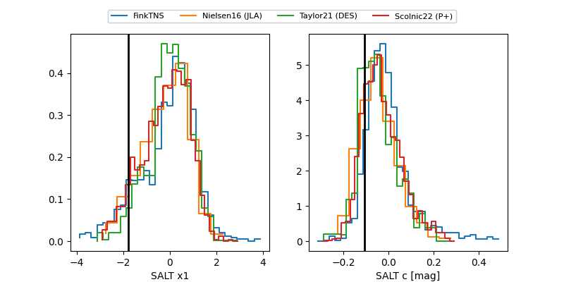

2025agge
Target 2025agge at 2025-12-20 06:04
Aliases and brokers:
FINK: fink-portal.org/ZTF25acgowvc
Lasair: lasair-ztf.lsst.ac.uk/objects/ZTF25acgowvc
ALeRCE: alerce.online/object/ZTF25acgowvc
TNS: wis-tns.org/object/2025agge
YSE: ziggy.ucolick.org/yse/transient_detail/2025agge
alt names
ZTF25acgowvc (ztf,fink_ztf)
2025agge (tns,yse)
ATLAS25psl (atlas)
Coordinates:
equatorial (ra, dec) = 64.5977,-16.19884
equatorial (HMS+DMS) = 04:18:23.44,-16:11:55.84
galactic (l, b) = (211.1940,-41.03018)
Flags:
Photometry:
last atlasc=18.71, atlaso=18.75, ztfg=18.56, ztfr=18.76
1 atlasc, 2 atlaso, 6 ztfg, 5 ztfr detections
Lightcurve

Visibility


Additional plots
